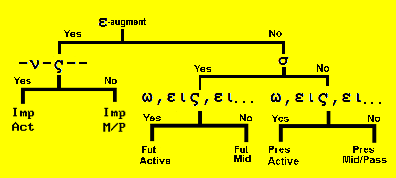

Lesson 16
| Greek | Meaning | Notes |
|---|
| ἄξω | I shall lead | future of ἄγω |
| ἀκούσω | I shall hear | future of ἀκούω |
| βλέψω | I shall see | future of βλέπω |
| σώσω | I shall save | future of σώζω |
| γενήσομαι | I shall become | future of γίνομαι |
| γνώσομαι | I shall know | future of γινώσκω |
| ἐλεύσομαι | I shall come, go | future of ἔρχομαι |
| λήψομαι | I shall take | future of λαμβάνω |
| ἐρῶ | I shall say | future of λέγω |
| ἐνώπιον + Gen | before | |
| ἔξω | without | |
| εὐθύς | immediately | |
| ἤ | or | |
Future active indicative of λύω
| Singular |
| | Form | Meaning |
|---|
| 1st | λύσω | I shall loose |
| 2nd | λύσεις | yous will loose |
| 3rd | λύσει | he/she/it will loose |
| Plural |
| | Form | Meaning |
|---|
| 1st | λύσομεν | we shall loose |
| 2nd | λύσετε | youp will loose |
| 3rd | λύσουσι | they will loose |
Future middle indicative of λύω
(but not the passive)
| Singular |
| | Form | Meaning |
|---|
| 1st | λύσομαι | I shall loose myself |
| 2nd | λύσῃ | yous will loose yourself |
| 3rd | λύσεται | he/she/it will loose himself |
| Plural |
| | Form | Meaning |
|---|
| 1st | λυσόμεθα | we shall loose ourselves |
| 2nd | λύσεσθε | youp will loose yourselves |
| 3rd | λύσονται | they will loose themselves |
- To create the future for many verbs
- add σ to the end of the stem.
- Then add the endings of the present active or the present middle.
- When the stem ends in a consonant, there is sometimes a change when σ is added.
- When the stem ends in a liquid, the σ is dropped and the ω is accented
- λ+σ=λ
- μ+σ=μ
- ν+σ=ν (μένω becomes μενῶ)
- ρ+σ=ρ
- When the stem ends in a mute, the result are as follows:
- Palatal κ+σ, γ+σ, χ+σ = ξ (ἄγω becomes ἄξω)
- Labial π+σ, β+σ, φ+σ = ψ (βλέπω becomes βλέψω)
- Dental τ+σ, δ+σ, θ+σ = dental drops out (πείθω becomes πείσω)
- Sibilant ζ+σ, ξ+σ, σ+σ, ψ+σ = σ first sibilant drops out (σώζω becomes σώσω)
- Some future stems are entirely different from the present stems.
- The verb stem of γινώσκω is γνω-; therefore the future stem will be γνωσ-
- The verb stem of κηρύσσω is κηρυκ-; the future stem will be κηρυξ- (from κηρυκσ-)
- The verb stem of βαπτίζω is βαπτιδ-; the future stem will be βαπτισ- (from βαπτιδσ- where the dental drops out as mentioned above).
- Some verbs are active in the present tense, but deponent in the future tense.
- This means that a verb might have an active and middle/passive form in the present tense, but in the future tense, the active form is missing.
- Instead, the middle form has an active meaning (and no longer has a middle meaning).
- For example:
- λαμβάνω means I receive
- but there is no future active form.
- Instead λήψομαι (the middle form) means I shall receive
- not I shall receive myself.
- Also:
- γινώσκω means I know
- but there is no future active form.
- Instead γνώσομαι (the middle form) means I shall know
- not I shall know myself
- The future tense indicates something that happens or will happen in the future.
- The kind of action may be either punctiliar or linear as the context will indicate.
- In most instances it is punctiliar
- Greek has a special construction to indicate continuous action called the periphrastic future which we will study in a future lesson.
Future indicative of εἰμί
| Singular | Plural |
|---|
| ἔσομαι | I shall be | ἐσόμεθα | we shall be |
| ἔσῃ | you will be | ἔσεσθε | you will be |
| ἔσται | he (she, it) will be | ἔσονται | they will be |
VERB ID
- Ask yourself the following questions:
- Does it have an augment?
- Yes, then it is a past tense.
- No, then it is present tense or future tense
- If it is a past tense, does it have the endings:
-ν, -ς, (blank), -μεν, -τε, -ν (or -σαν)?
- Yes, it is imperfect active
- No, it is imperfect middle/passive
- If it is not the past tense, does it have the σ after the stem?
- Yes, it is Future
- No, it is Present
- If it is a future tense, does it have the endings:
-ω, -εις, -ει, -ομεν, -ετε, -ουσι ?
- If yes, it is Future indicative active.
- If no, then it is Future indicative middle/passive.
- If it is a present tense, does it have the endings:
-ω, -εις, -ει, -ομεν, -ετε, -ουσι ?
- If yes, it is present indicative active.
- If no, then it is present indicative middle/passive.

Translate the following:
- ὁ χριστὸς ἄξει τοὺς μαθητὰς αὐτοῦ εἰς τὴν ὁδὸν τῆς ἀγάπης.
- ἐν ἐκείνῃ τῇ ἡμέρᾳ ὁ μεσσίας ἐλεύσεται σὺν τοῖς ἀγγέλοις αὐτοῦ.
- ἀμαρτωλοὶ μέν ἐστε, γενήσεσθε δὲ υἱοὶ τοῦ θεοῦ.
- τότε γνώσονται ὅτι αὐτός ἐστιν ὁ κύριος.
- λήψεσθε καὶ τὰ δῶρα καὶ τοὺς οἴκους.
- οὐδὲ ἐγὼ ταῦτα γνώσομαι.
- αἱ ἡμέραι αἱ κακαὶ ἐλεύσονται.
- τὰ τέκνα βλέψει τὸν ἄγγελον ἐν τῇ ἐκκλησίᾳ.
- κηρύξουσι τὸ εὐαγγέλιον καὶ δέξονται ἁμαρτωλοὺς μετὰ χαρᾶς.
- οἱ μαθηταὶ ἀκούσουσι τῆς φωνῆς τοῦ κυρίου αὐτῶν καὶ ἄξουσι τὰ τέκνα πρὸς αὐτόν.
- ἐσόμεθα σὺν αὐτῷ ἐν τῇ βασιλείᾳ αὐτοῦ.
- εἶ πονηρός, ἀλλ̓ ἔσῃ ἀγαθός.